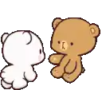
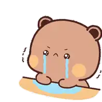
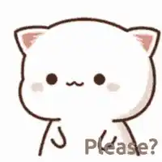

J 💖
For Jannu — My Heartfelt Words
A few honest points from your brother. I hope these reach your heart.

Akka, you mean everything to me
Your love is my shelter — more than anyone else. The way you care feels like a mother's love: warm, protective, and endless.
When you're with me, all worries vanish
The world becomes bright and free — I laugh, I breathe, and life feels joyful and easy when you're by my side.

Sometimes I feel sad and jealous
When you spend time with others more than me, it hurts. I feel small, egoistic, and a bit lost — I miss our old closeness.

I wish you'd spare some time for me
Just a little time, a small chat, a walk together — those moments mean the world. Please don't drift away; I need you close.
You will always be my sister
No matter what — you'll always be my peace, my joy, and my home. I love you endlessly, and I wish for our bond to stay forever.